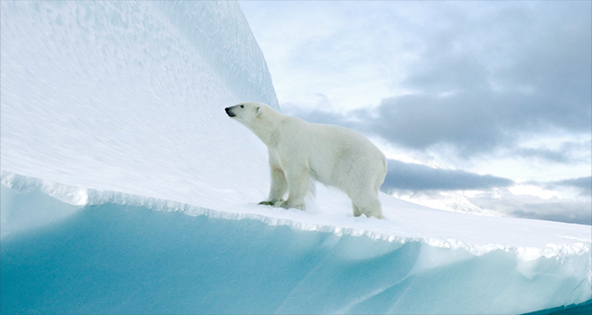

*퀴즈 참여 현황은 매주 업데이트 됩니다.
죽은 어미 곁을 떠나지 못하는
새끼 북극곰의 이야기
북극곰 후원하기
최근 20년사이 북극의 빙하 면적은
50% 감소하였습니다
북극은 북극곰의 주 서식지이자 사냥터지만
이 순간에도 녹아 내리는 빙하로 인해 북극곰은 갈 곳을 잃었습니다

빙하가 녹으면 인류 재앙으로 돌아옵니다
지구 온난화로 북극의 온도는 빠르게 상승하고 빙하는 더욱 빠르게 녹아가고 있습니다.
빙하가 무너져 내리는 경고를 결코 무시해서는 안됩니다.
-
28조 톤
23년 동안 녹은 빙하의 양
1944년~2017년까지 23년동안 녹은 빙하의 양 28조 톤, 해당 동안 해수면 약 3.5CM 상승. 영국 리즈대학교 앤드루 셰퍼드 교수는 “해수면이 1cm 높아질 때 600만명이 터전을 잃는다” 라고 했습니다.
-
27cm
앞으로 높아질 지구 해수면
22년 8월, 덴마크·그린란드 지질연구소 연구팀은 “지금까지 그린란드 빙하가 녹으면 해수면이 올라갈 것이라는 결과가 나왔지만 27cm는 지금껏 나온 예측치의 두배 수준”이라고 말했습니다.
-
332 만명
예상 침수 피해 인원
클라이밋 센트럴 데이터에 따르면 해수면 상승과 태풍으로 우리나라의 국토 5%가 물에 잠기고 332만여명이 침수 피해 가능성이 있다고 예측됩니다.